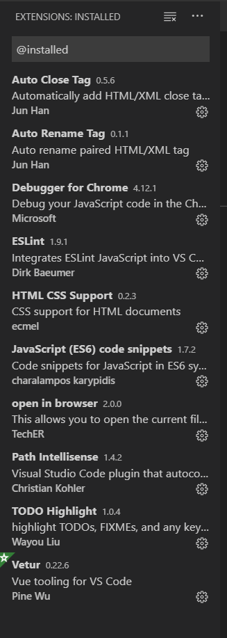

原文连接:https://www.cnblogs.com/AnotherBlue/p/11850432.html
1.安装Node.js
安装包下载地址： https://nodejs.org/en/
安装时可以选择是否自动安装必要的工具，如Chocolatey、Python2，这里我选择了自动安装
Node.js安装结束后，打开cmd输入 node -v ，回车，会输出node的版本号则表示Node.js安装成功。
2.设置Node.js prefix（全局）和cache（缓存）路径
在nodejs安装路径下，新建node_global和node_cache两个文件夹
设置缓存文件夹
npm config set cache "C:\Program Files\nodejs\node_cache"
设置全局模块存放路径
npm config set prefix "C:\Program Files\nodejs\node_global"
设置成功后，之后用命令npm install XXX -g安装以后模块就在C:\Program Files\nodejs\node_global里
3.安装cnpm镜像
npm install -g cnpm --registry=https://registry.npm.taobao.org
4.设置环境变量
系统变量添加NODE_PATH，路径：C:\Program Files\nodejs\node_global\node_modules
修改用户变量中path，添加路径C:\Program Files\nodejs\node_global
验证环境变量
node -v
npm -v
cnpm -v若上述命令均能成功显示版本信息，环境变量设置成功。
遇到如下错误信息
需要输入如下语句解决：
set-ExecutionPolicy RemoteSigned
在提示菜单选择时选择A或者Y，再次输入cnpm -v成功显示版本信息。
5.安装vue和vue-cli
cnpm install vue -g
cnpm install vue-cli -g
6.新建项目并运行测试
a.) cmd进入D:/Vue
b.) vue init webpack-simple demo
c.) 进入项目目录 cd demo
d.) 安装项目需要的依赖 npm install
此时会出现安装node-sass失败的错误提示，解决办法如下：
1）先运行： npm install -g node-gyp
2）然后运行：运行 npm install --global --production windows-build-tools 可以自动安装跨平台的编译器：gym
3）执行npm uninstall node-sass，清除安装错误的缓存
4）执行npm install node-sass重新安装node-sass
5）重新执行npm install
e.) 运行项目 npm run dev

浏览器中http://localhost:8080/显示vue页面则表明vue开发环境安装成功
7.安装开发工具VS Code
安装包下载地址： https://code.visualstudio.com/Download
VS Code开发Vue Project时常用插件
